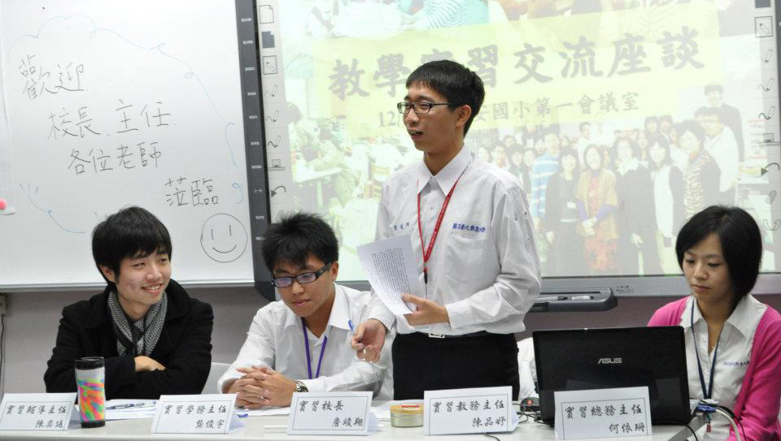

我將過去我準備『國民小學教師檢定』的筆記分享給大家，希望可以幫助到大家準備教師檢定考試。以下筆記的內容主要來自"陳嘉陽(民101)，教育概論(上)、教育概論(中)以及教育概論(下)，教甄策略研究中心 印行" 以及一些網頁相關資料.
參考資源
教師檢定筆記
筆記
| 項次 | 資料描述 |
| 01 | 教育概論 Note Cover |
| 02 | 第一章 教育的基本概念 (完整版) |
| 03 | 第二章 教育的歷史演進 (完整版) |
| 04 | 第三章 教育的哲學基礎 (完整版) |
| 05 | 第四章 教育的社會學基礎 (完整版) |
| 06 | 第五章 教育的心理學基礎 (完整版) |
| 07 | 第六章 教育的心理學基礎(二) (完整版) |
| 08 | 第七章 教育行政 |
| 09 | 第九章 課程理論與實務 (完整版) |
| 10 | 第十一章 教學原理 |
| 11 | 第十五章 輔導與諮商(完整版) |
| 12 | 第十五章 輔導與諮商(完整版) |